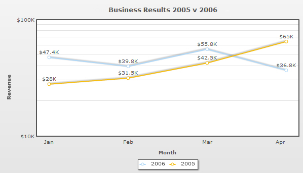

| Creating a simple Log Line chart |
To begin with, let us create a simple chart with the same data that we used to create the Logarithmic Column 2D chart. The chart will look as under: |
|  |
And the data for same can be listed as under: |
<chart caption='Business Results 2005 v 2006' xAxisName='Month' yAxisName='Revenue' numberPrefix='$' formatNumberScale='1' canvasPadding='25'>
<categories>
<category label='Jan' />
<category label='Feb' />
<category label='Mar' />
<category label='Apr' />
</categories>
<dataset seriesName='2006'>
<set value='47400' />
<set value='39800'/>
<set value='55800' />
<set value='36800' />
</dataset>
<dataset seriesName='2005'>
<set value='28000'/>
<set value='31500'/>
<set value='42500'/>
<set value='65000'/>
</dataset>
</chart>
{
"chart":{
"caption":"Business Results 2005 v 2006",
"xaxisname":"Month",
"yaxisname":"Revenue",
"numberprefix":"$",
"formatnumberscale":"1",
"canvaspadding":"25"
},
"categories":[{
"category":[{
"label":"Jan"
},
{
"label":"Feb"
},
{
"label":"Mar"
},
{
"label":"Apr"
}
]
}
],
"dataset":[{
"seriesname":"2006",
"data":[{
"value":"47400"
},
{
"value":"39800"
},
{
"value":"55800"
},
{
"value":"36800"
}
]
},
{
"seriesname":"2005",
"data":[{
"value":"28000"
},
{
"value":"31500"
},
{
"value":"42500"
},
{
"value":"65000"
}
]
}
]
} |
In the above XML we have done the following:
|